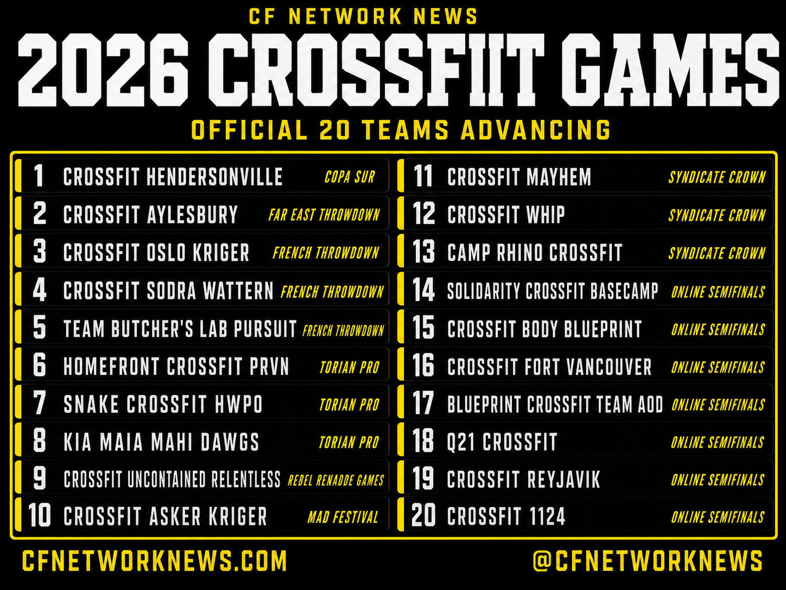
With the Team Online Semifinals leaderboard now locked, the race to San Jose is officially on. After weeks of in person events and online score submissions, video reviews, penalties, and appeals, the standings are official and these 20 teams currently hold the tickets to this year’s CrossFit Games. Barring any further updates from CrossFit, this is the group fans can expect to see start their competition on Thursday, July 23rd to find the Fittest Team on Earth.
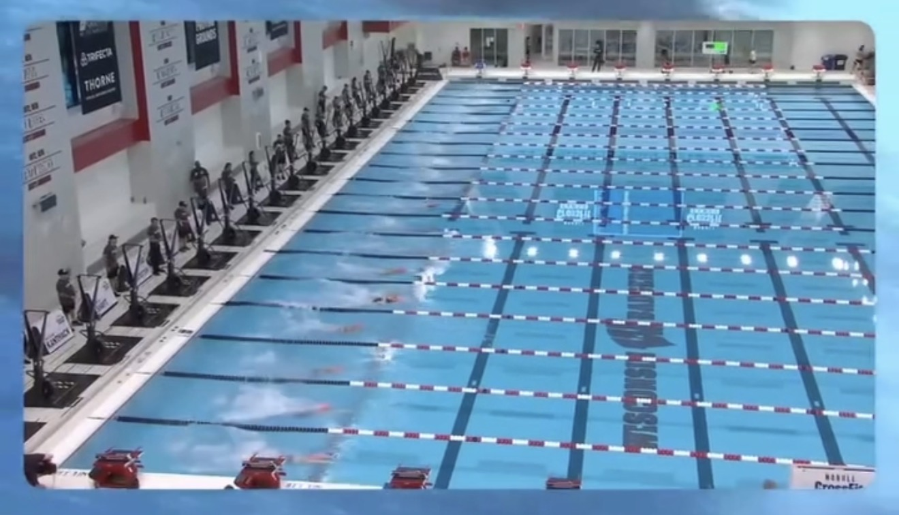
Swimming is officially back at the CrossFit Games, and this time it is heading to a swimming pool instead of open water.
After several years of lake and ocean events that produced both iconic moments and the tragic event in 2024, a move into a controlled pool environment lines up with what CrossFit leadership has hinted at in recent seasons when they said any return to swimming would likely be in a pool.
The Games have a deep history with swim events, from early ocean and lake tests to some memorable pool workouts, including interval style pieces like “Rinse and Repeat” and “The Pool” that combined short swim lengths with fast transitions and light gymnastics or kettlebell work.
With a pool back in play for 2026, attention quickly turns to proven water specialists who could have a homerun in that event or events.
On the women’s side, Lucy Campbell stands out as one of the best pure swimmers in the field, a former national level swimmer whose background in the water gives her a clear edge whenever swim events appear on the schedule.
Among the men, rising star Ty Jenkins showed us earlier this year at the WFP event in London that he too can have a homerun event in the pool.
Between the historical weight of swim events, the added safety and precision of a pool setting, and a new generation of athletes built to attack the water, the return of swimming is set to be one of the most anticipated events as the CrossFit Games head back to California this summer.
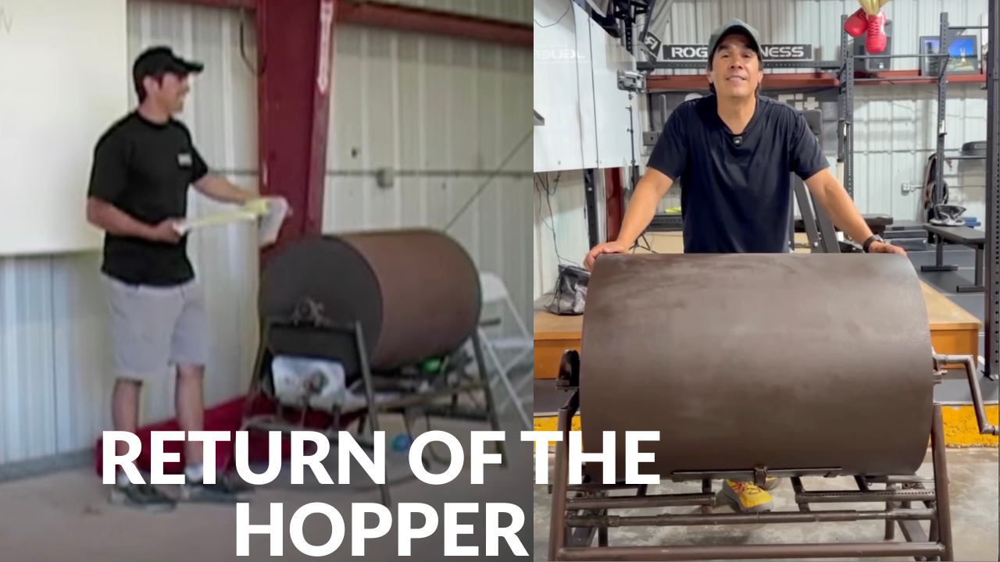
A little after 7 p.m. today, Dave Castro announced on Instagram that the original CrossFit Games hopper will return and be used for the Friday night event at this year’s CrossFit Games.
The hopper, an old peanut roaster, was used to select the very first workout of the first CrossFit Games in 2007 back at the Ranch in Aromas, and its return ties the 2026 season directly back to the roots of the sport.
Reaction in the comments was overwhelmingly positive as athletes and fans welcomed the throwback. Taylor Self wrote, “this is fu%king sick,” while reigning Fittest Man on Earth Jayson Hopper commented, “let me pull from it, its only right,” and Carolyne Prevost added, “Love it.”
Many other athletes chimed in with similar excitement, viewing the return of the hopper as the perfect way to celebrate the legacy of the Games on this twentieth season.
Shortly after the post, Castro called in to the live show on the CF Network with Sevan Matossian and Taylor Self, where he not only talked about the hopper but also revealed that he is considering handing over event programming to someone else this year, without saying who.
Sevan guessed Greg Glassman on air, a name that would be fitting for the twentieth year of the CrossFit Games if it came true, though nothing has been confirmed.
Either way, the announcement has sent excitement through the community, and Castro indicated that more details and reveals will continue to roll out over the next five weeks leading up to the first day of competition.
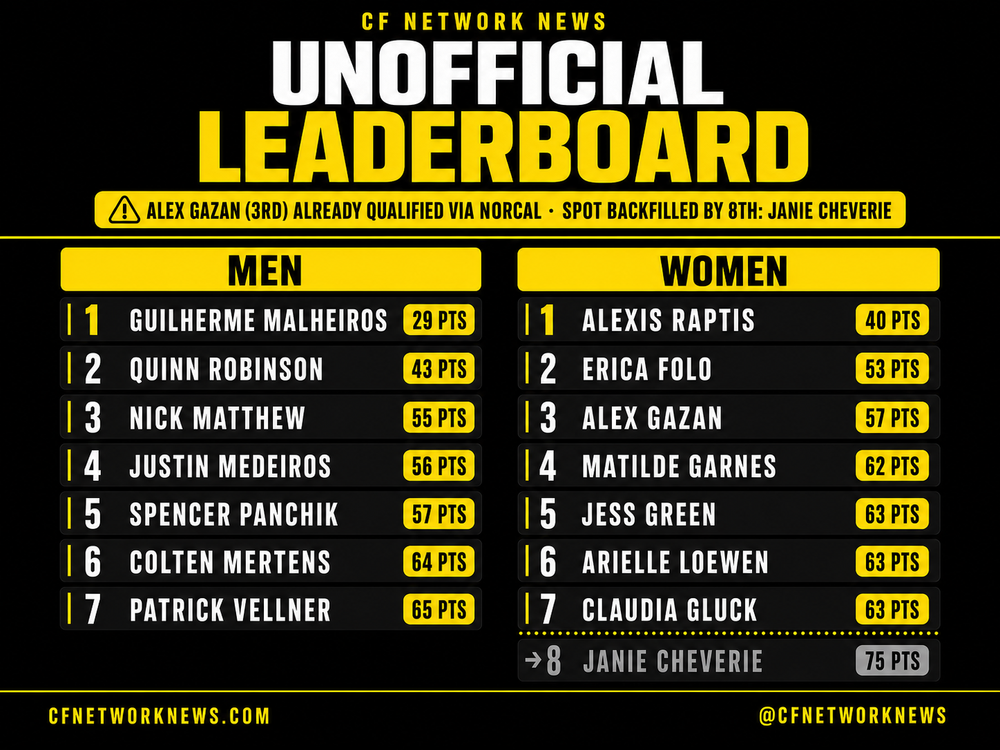
The leaderboard for the 2026 Individual Online Semifinals went live yesterday, and these are your unoffical top 7 Men and top 8 women.
The top seven men and top seven women from this worldwide leaderboard will earn tickets to the CrossFit Games in San Jose at the end of July, but CrossFit has until June 29 to finalize results after video review and potential penalties.
All workout videos are now publicly viewable, giving fans and judges a chance to scrutinize movement standards before HQ makes any adjustments.
CFNetwork was live on YouTube as the leaderboard dropped, breaking down each event, pulling up athlete videos on stream, and debating where penalties or score changes might reshuffle the current top seven on both the men and the women.
The show highlighted how tight the points are around the cut line, noting that even a minor time or rep adjustment on a single workout could bump someone into or out of a Games spot once CrossFit applies its official review criteria.
On the women’s leaderboard, several athletes have separated themselves with consistent finishes across all five tests, but there is still a crowded pack hovering just outside the top seven and within striking distance if any major penalties are handed down.
The men’s side tells a similar story, with current leaders stacking multiple top ten event placements while the gaps between seventh and the next few names remain razor thin.
With videos open, community review underway, and CrossFit’s formal review window running for the next couple of weeks, the leaderboard we see today is possibly not the leaderboard we will have when the final seven men and seven women are officially announced.
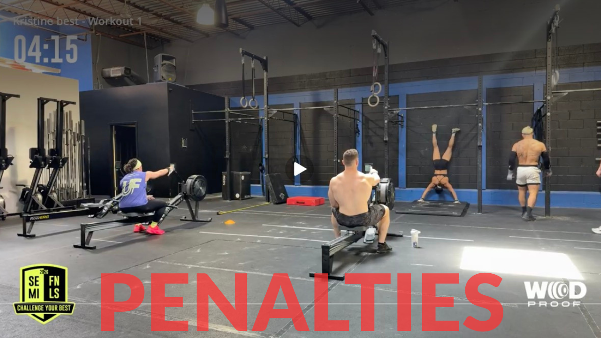
Penalties from CrossFit HQ’s video review of the Team Online Semifinals have dramatically reshaped the standings, knocking the former overall leader out of qualifying position.
CrossFit Body Blueprint, led by Will Carter, Kristine Best, Joe Pierro, and Nicolette Torreggiani, had been sitting in 1st place after scores were initially posted but now sits 11th on the updated leaderboard, outside the top seven teams in position to advance to the 2026 CrossFit Games.
CrossFit 1124 was also affected in the shakeup. After penalties were applied, 1124 dropped from 4th to 6th overall, still inside a Games qualifying spot.
While several top teams took notable hits during the review process, Body Blueprint’s fall from 1st to 11th stands out as the biggest shift on the board.
With only the top seven teams advancing from the online stage, the post review penalty phase once again proved how decisive video assessment can be in determining who stays in the Games race and who falls out.
Teams have 24 hours to respond with an appeal to their penalties once notified by CrossFit, which means there could still be some additional adjustments to this leaderboard. The leaderboard is said to be finalized by no later than Jume 22nd.
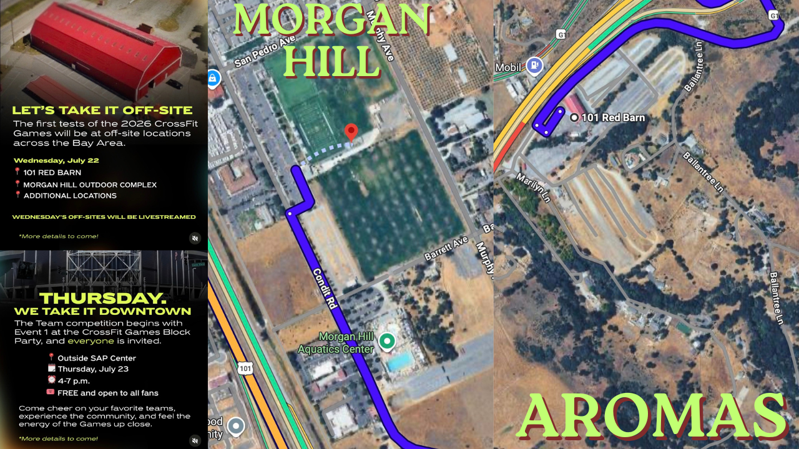
CrossFit announced on Instagram that the first day of competition at the 2026 CrossFit Games will now begin Wednesday, July 22, with multiple offsite events before action shifts back toward the main venue later in the week.
The opening offsite location is 101 Red Barn in Aromas, a venue that looks and feels a lot like the original Ranch setting from the early years of the CrossFit Games.
A second confirmed site is the Morgan Hill Outdoor Complex, which features a large outdoor field and an aquatic center nearby with a swimming pool, setting the stage for field events and potential swimming tests.
CrossFit also mentioned that additional locations will be used on Wednesday, and confirmed that all of the offsite events that day will be live streamed, with more details still to come.
In the same announcement, CrossFit revealed that Thursday's focus will move downtown where the team competition officially begins, with Event 1 hosted at a CrossFit Games block party outside of the SAP Center from 4 to 7 p.m.
The downtown block party will be free and open to all fans, blending the first scored team event with a festival style kickoff to the Games.
The reaction in the comment section turned critical almost immediately as fans pointed out how late these changes were shared compared to when flights and hotels are usually booked.
User victoria7141993 wrote, “Wow, I already planned for Friday to Sunday. If I had known this, I would’ve planned to arrive in California on Wednesday,” highlighting how the midweek start caught many by surprise.
Another fan, shankers3, added, “This is silly to reveal this late in the setting, how many people already booked their plans and hotels. Mildly annoying to be honest,” echoing the frustration of those locked into travel that does not cover Wednesday.
CrossFit Breakthrough commented, “Normally a big fan of the unknown and unknowable, less so when it comes to my flights and hotels,” capturing the tension between the sport’s trademark unpredictability and the practical realities of planning a trip.
For obvious reasons, some of the operational and venue details could not be announced far in advance, but fans noted that CrossFit still could have warned earlier that competition for teams would be starting on Thursday instead of waiting until the last minute to confirm it publicly.
Stay tuned to the CrossFit Games Instagram and to CFNetwork News for further details as soon as they become available.
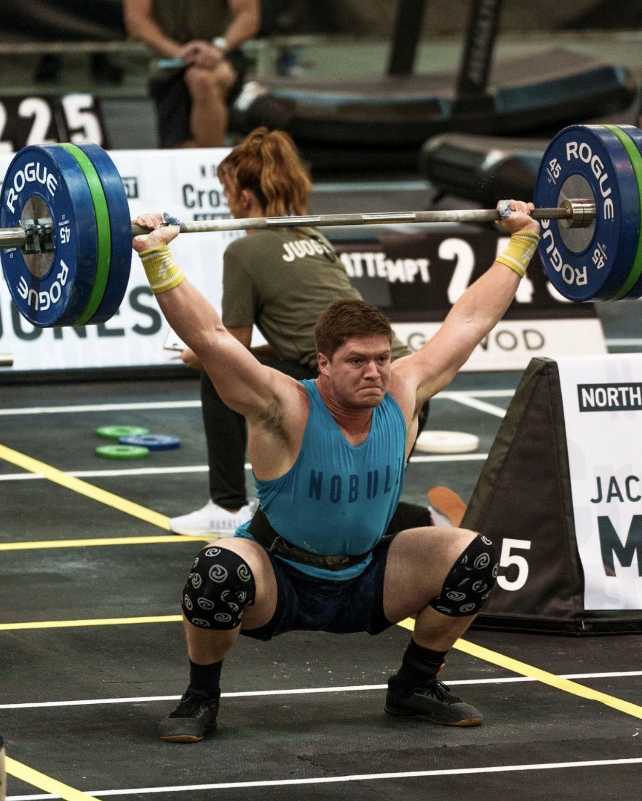
Jacob Marlow threw down a big marker this afternoon on CF Network, logging a blazing 4:08 on Individual Semifinal Workout 4.
Workout 4 is for time with 5 4 3 2 1 reps of snatches and 5 shuttle runs of 50 feet after each set. The prescribed weight is 155 pounds for women and 225 pounds for men, with a 10 minute time cap.
Marlow performed the effort live on CF Network this afternoon with Sevan Matossian, Matthew Souza, Seth Page, Taylor Self and a guest watching on.
Throughout the workout, Marlow stayed steady and relied on quick squat snatch singles from start to finish rather than trying to rush the barbell with touch and go sets.
He stayed under control on the transitions, and never appeared to hit a major slowdown point as the rounds got shorter and faster.
By the final snatch and last shuttle runs, Marlow was still moving decisively, crossing the line at 4:08 and setting an early benchmark for the men’s field.
The big question now is whether that 4:08 will hold up through the rest of the Individual Online Semifinal window or if another athlete will find a way to go even faster.
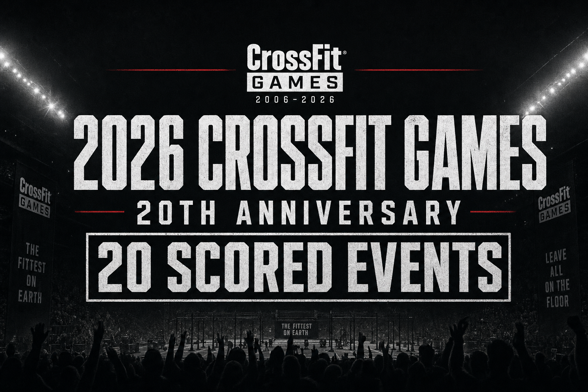
The CrossFit Games have already been set for July 24 to 26 in San Jose, but today’s update confirmed a key competitive detail: there will be 20 scored events to mark the 20th anniversary of the Games.
This 20 squared structure is being positioned as a first in Games history and signals a dense, high volume test for the field.
While the full event list has not been released, there is already speculation around what 20 events could include. With talk of bringing back swimming to the Games, many expect at least one water event to appear in the programming.
A slate this large also makes it likely that we see at least one heavy one rep max test and potentially one or more hero style workouts woven into the weekend to honor CrossFit’s roots while pushing athletes across strength, endurance, and grit.
View CrossFit’s Instagram post here: https://www.instagram.com/reels/DZYEfwFp2BY/
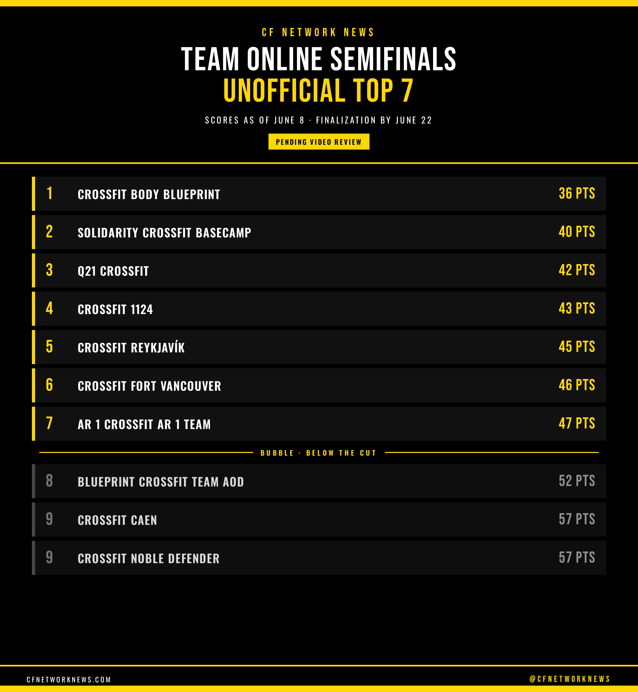
Seven teams sit in qualifying position after the Team Online Semifinals, but nothing is official until the videos clear review. With scores locked as of June 8 at noon PT and a finalization deadline of June 22, 2026, the next two weeks will decide who actually earns invitations to the 2026 CrossFit Games.
The current unofficial leaderboard has CrossFit Body Blueprint leading the pack on 36 points after a remarkably consistent run of finishes across all five tests. Just behind them, Solidarity CrossFit Basecamp (40 points) and Q21 CrossFit (42 points) occupy second and third, each buoyed by top five efforts that offset one weaker event.
CrossFit 1124 sits fourth with 43 points, helped by an event win and another podium finish. CrossFit Reykjavík holds fifth at 45 points thanks to a string of top five performances including a second place on Event 3. Rounding out the current qualifying spots are CrossFit Fort Vancouver in sixth (46 points) and AR 1 CrossFit AR 1 Team in seventh (47 points), both hanging on after one or two events outside the top ten.
The margin for error is razor thin. Blueprint CrossFit Team AOD sits in eighth on 52 points, only five points back of AR 1 after posting a strong fourth place in Event 1 but slipping into the teens and mid teens on later tests. CrossFit Caen and CrossFit Noble Defender are tied on 57 points and either could move into the top seven if review penalties hit teams above them.
Because scoring is tight across all five events, even a single major deduction or a disallowed score due to movement standards or video issues could shuffle the entire back half of the top ten.
Every blue camera icon on the leaderboard represents a video that CrossFit’s review team will evaluate before finalizing scores. CrossFit has until June 22 to finalize the leaderboard, after which official invitations will go out to the seven qualifying teams, turning the next two weeks into a waiting game for all the teams.
View every team's scores, video review status, and live standings on the official CrossFit Games leaderboard.
View Live Leaderboard →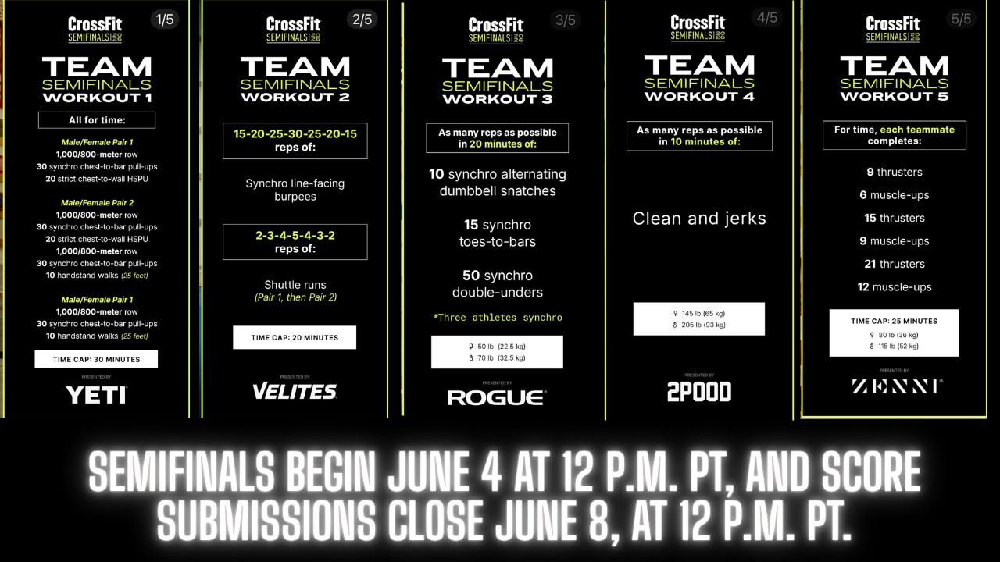
The 2026 CrossFit Games Team Online Semifinals officially began today, Thursday, June 4, with teams given until Monday, June 8 at 12 p.m. PT to complete all five workouts and submit their scores.
CrossFit released all five workouts earlier this week, and qualified teams were set to receive workout passwords by email when the competition window opened at 12 p.m. PT.
This online stage serves as the final qualifier for teams trying to earn one of the seven spots available to the 2026 CrossFit Games in San Jose, California.
According to the 2026 CrossFit Games Rulebook, teams must follow all prescribed movement standards, equipment requirements, floor plans, and score submission rules exactly during the competition window.
CrossFit also requires YouTube video submissions for each Online Semifinal workout, and those videos must be publicly viewable so scores can be verified through the review process.
CFNetwork News has included the official workout graphics with this story so athletes, coaches, and fans can review each test directly from CrossFit’s release.
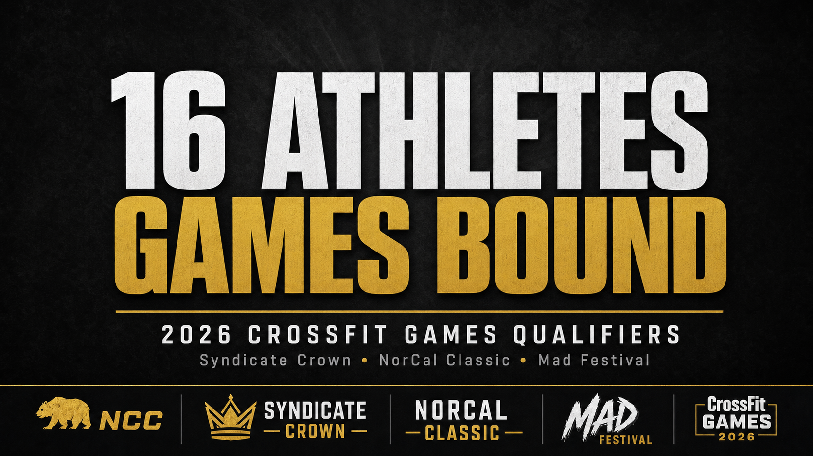
Sixteen more individual athletes have officially qualified for the 2026 CrossFit Games in San Jose after the final events wrapped at MAD Fitness Festival, Syndicate Crown, and the Northern California Classic.
From MAD Fitness Festival, the top three elite men advancing are Aniol Ekai with 562 points, Luis Cuellar with 524 points, and Calum Clements with 516 points.
On the elite womens side, Games spots go to Gabriela Migala with 545 points, Lucy McGonigle with 536 points, and Ella Wilkinson with 521 points, all finishing inside the top three on the final leaderboard.
At Syndicate Crown, the mens qualifiers are Saxon Panchik with 525 points, Ty Jenkins with 513 points, and Austin Hatfield with 513 points after finishing first through third on the overall standings.
The womens qualifiers out of Syndicate are Lydia Fish with 570 points, Haley Adams with 483 points, and Danielle Brandon with 480 points, locking in the top three positions on the final leaderboard.
The Northern California Classic rounded out the weekend by sending two men and two women to San Jose. On the elite mens side, Tudor Magda with 596 points and Dylan Hamming with 516 points claimed the two available Games spots.
For the elite women, Alex Gazan with 588 points and Rachel Noel with 578 points finished first and second overall to earn qualification out of Sacramento.
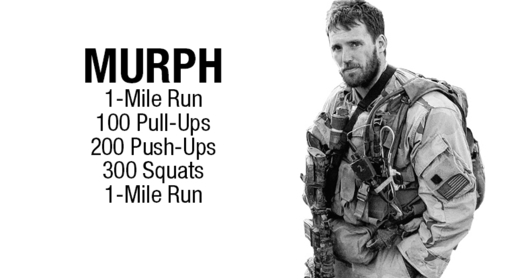
Every Memorial Day, CrossFit gyms around the world perform the hero workout “Murph” as a way to honor fallen service members, center the day on remembrance, and connect the community through shared suffering.
Created in memory of Navy Lieutenant Michael Murphy, who was killed in action in Afghanistan in 2005, the workout was one of his favorite training sessions and was later named for him as a CrossFit Hero WOD. It combines a 1 mile run, 100 pull ups, 200 push ups, 300 air squats, and another 1 mile run, traditionally done in a weighted vest.
The significance of Murph on Memorial Day goes beyond the score on the whiteboard. Athletes are asked to dedicate their effort and discomfort to those who gave their lives in service, using the long, grinding structure of the workout as time to reflect.
Many gyms begin with a moment of silence, read a short biography of Lt. Murphy or other fallen heroes, or invite veterans to share what the day means to them. That context reframes Murph from a test of fitness into a ritual of remembrance, where pacing, partition strategies, and PR attempts sit alongside gratitude and grief.
The Memorial Day Murph has become a yearly checkpoint that ties fitness back to purpose, asking athletes to lean into discomfort on a day that is fundamentally about sacrifice and turning a long and demanding workout into an intentional act of remembrance.
If you want to do Murph, you can find a local CrossFit affiliate to drop in at using the CrossFit affiliate map here: CrossFit affiliate map .